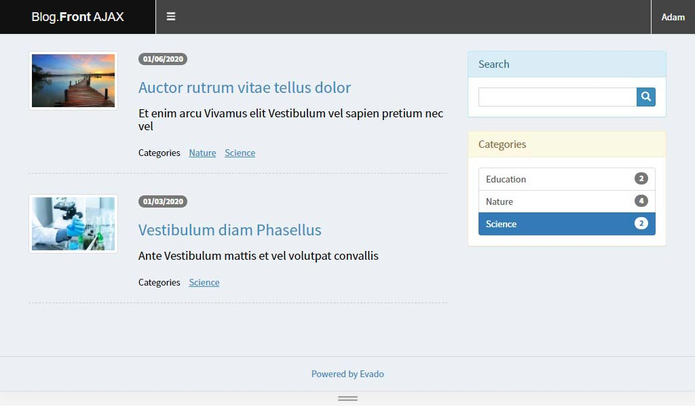

Introduction
Evado Declarative Framework is open source software written in modern JavaScript using high-performance Node.js and MongoDB servers. This tutorial demonstrates step-by-step creation of a web app, not by writing code, but by declaring entities and relationships.
Let's create a blog. This application has entities that are familiar to everyone (article, category, comments) and simple relations between them. Required functionality:
- create and edit articles
- upload images and add them to articles
- create and edit article categories (an article may belong to different categories)
- comment on articles (comment without logging in)
- support multi-user access
- restrict role-based actions:
- author - write and edit own articles
- editor - edit other articles
- administrator - full access
- create client interfaces for reading and managing data
- store application metadata in version control system
Source code of the finished application is available in a public repository.